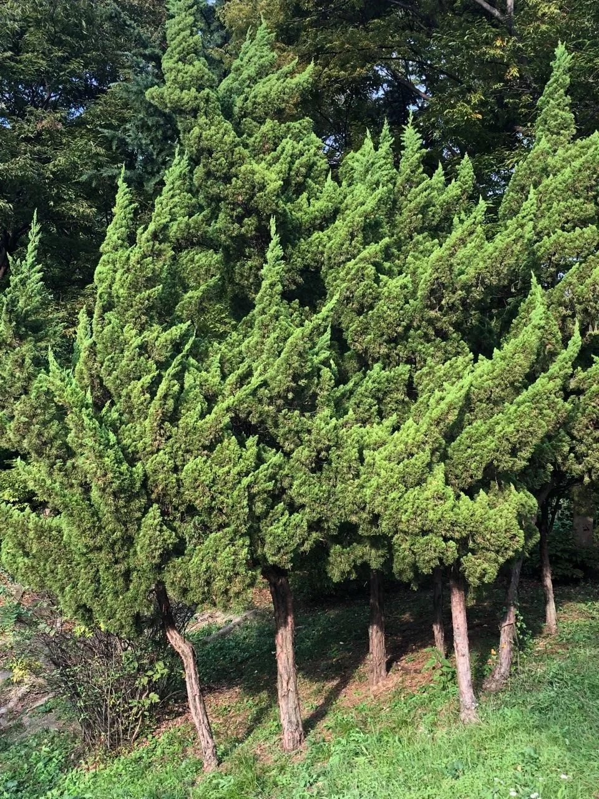

Gallery

Details
- 학명: Juniperus chinensis var. kaizuka hort
- 분류: 측백나무과 향나무속의 상록침엽수
- 원산지: 일본
- 형태적 특징:
- 높이: 8-15m
- 잎: 비늘잎이 주로 발달, 바늘잎은 거의 없음
- 수형: 불꽃 모양의 나선형으로 굽어나는 특징적인 모양
- 줄기: 수직으로 뻗음, 수피는 갈색
- 생태 및 재배:
- 선호 환경: 햇빛을 좋아함, 비옥한 사양토에서 잘 자람
- 개화 및 결실: 4월에 개화, 10-11월에 열매 맺음
- 관리:
- 2-3월, 10-11월에 전정
- 2-3월에 밑거름
- 6월에 시비
- 용도:
- 토피어리, 심볼트리, 산울타리로 활용
- 정원수, 가로수, 녹화목으로 널리 식재됨
- 특이사항:
- 대기오염에 강한 나무로 알려짐
- 1970년대 중반 이후 한국에서 조경수로 널리 사용됨
- 일본 특산종이 아니라 향나무의 한 품종으로 보는 견해도 있음
- 장미과 나무(배나무, 모과나무, 꽃사과 등) 근처에 심지 않는 것이 좋음
Location
경기도 부천 원미구 원미동, 원미공원